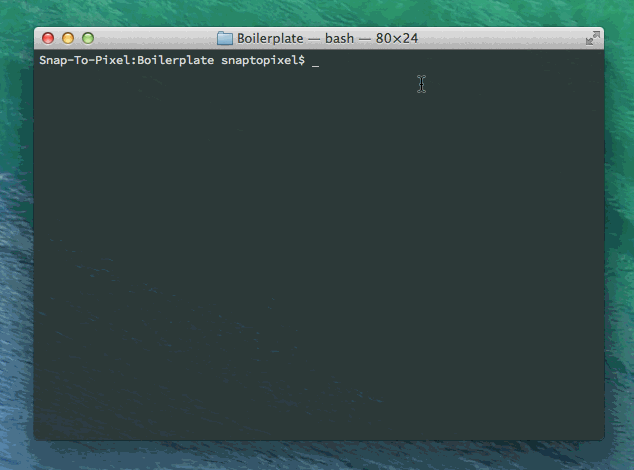

Publishing Your Theme
Once you've gotten your theme ready locally, publishing and previewing it is easy. Follow these instructions and you'll be ready to go!
- Open the terminal
- If you have grunt running hit
CTRL+Cto stop it. - Type
grunt publishand hitENTER
Your theme and any images assets will be uploaded to amazon and the urls will be output in the terminal like so:

Previewing Your Theme
After running the publish command, Grunt will display "preview" and "production" urls for your theme. The preview url will allow you to view your theme without worrying about invalidation. Use this url until you're ready to "go live" with your theme.
In order to preview your theme, log in to any system and go to this page: http://vt.lightspeedvt.com/boilerplate_util.cfm
You'll be able to turn the boilerplate on and off as well as specify the url to your published css file. Note that this will only effect your current session and not alter any group settings.
Using Your Theme
When you're ready to use your theme simply enter the "production" url into the group settings page and save your settings.
Versioning And Invalidation
Since the production url for your theme is distributed via Cloudfront, you'll need to either invalidate it or use a "query string" value to load the latest version. If you're only changing the css file itself and none of the images you can simply add a version number like so:
http://static.lightspeedvt.com/theme/my-theme/main.css?v1.0
If you're changing images or just want to make sure you're serving the latest files, you can invalidate via Grunt using grunt invalidate which will take a while to complete.